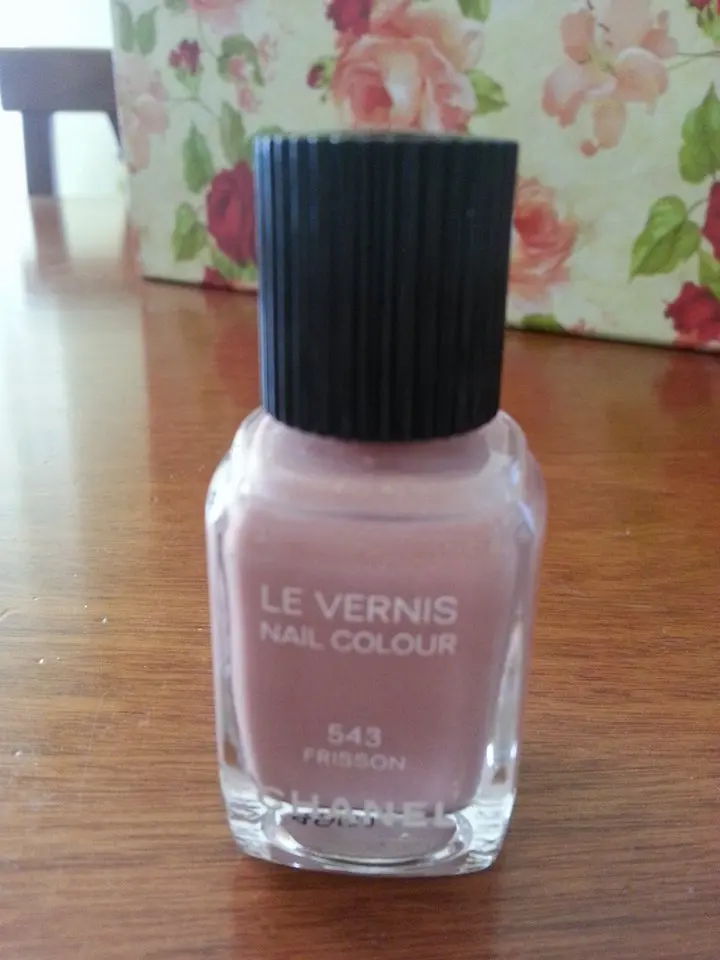
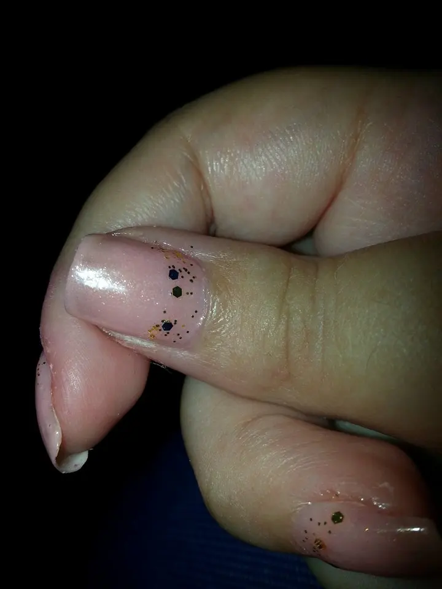
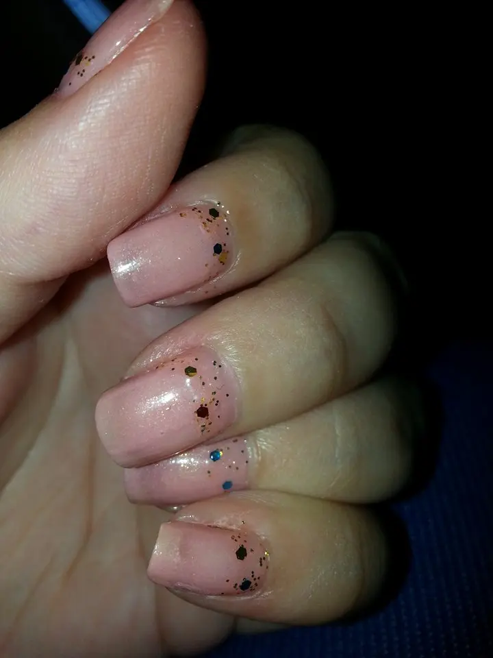
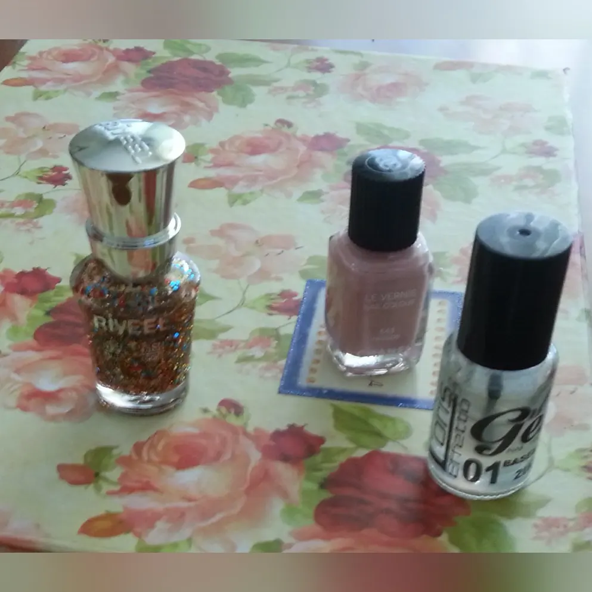
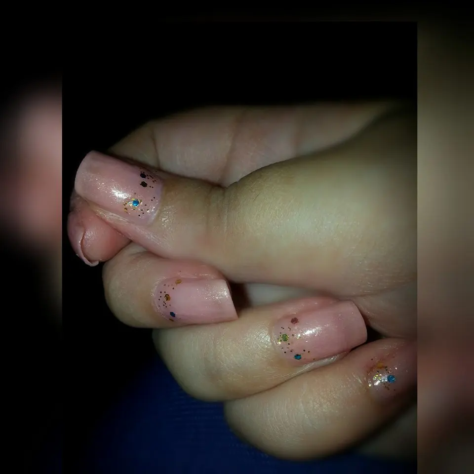

Nail art di fine luglio con Chanel
Hola fanciulle . .Finalmente mi sono decisa a cambiare smalto, con questo caldo non ho avuto voglia nemmeno di guardarmi allo specchio ad essere sincera. Poi non so voi ma ultimamente gira un virus che prende con lo stomaco e ad alcuni con la febbre. Per fortuna la febbre non mi è toccata ma mi è toccato il mal di stomaco che ormai va avanti da una settimana e di conseguenza non sono stata molto in vena.
Mettendo malanni a parte. .oggi voglio provare con voi uno smaltino nuovo che ancora dovevo testare.
Si tratta di uno smalto Chanel
● il numero 543 frisson

Beh, parlarvi di Chanel per me è come parlare di stile, qualità e eleganza.Amo da sempre questo brand e ho avuto modo, per mia fortuna di provare varie cose ma gli smalti non mi era ancora capitato.
Mi piace tanto questa tonalità perché è fine.
Per l'estate è la scelta migliore per avere le unghia colorate ma non vistosamente dipinte. .

Se poi vogliamo cambiare un pò gli schemi non ci vuole poi tanto. . Basta semplicemente fare anche come ho fatto io, mettere dei glitter di varia misura. . Questo smaltino glitterato è della Riveel e metterlo su zone diverse anzicchè applicarlo solo sulla zona french come si fa di solito e il gioco è fatto . .

Devo dire che mi mi ha fatto davvero piacere avere nella mia collezione di smalti questo rosato anttico, se così vogliamo chiamarlo. . ho uno molto simile della Yves Rocher . .poi farò una comparazione e vi mostrerò. .
La durata di questo smaltino Chanel, vabbè che ve lo dico a fare. . è all'altezza del nome che porta e di conseguenza non poteva smentirsi proprio in questa tipologia di prodotto. . Quindi colore e durata sono ottimi. .
che dire. . amo sempre più questo brand. .
Dunque per questa calda giornata, molto ma moooolto afosa di fine luglio, ho usato:
- Chanel n° 543 frisson
- Riveel glitterato di varie misure
- top coat per sigillare tutto

Il risultato di questa semplice e veloce nail art è:
